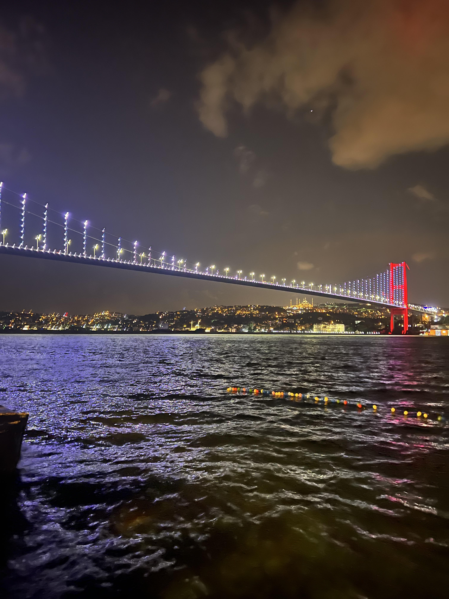

Traveling
I love traveling and discovering different countries and cultures. I visited Iraq, Jordan, Syria, Turkey, Dubai, and Canada.
I want to visit more countries in the future. I created a list for my future trips.
This is a picture of the Bosphorus Bridge in Turkey, Istanbul in my last year's trip.
